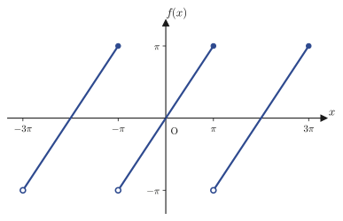
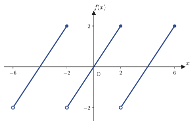
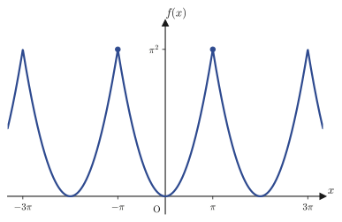
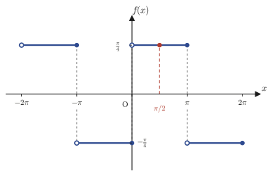
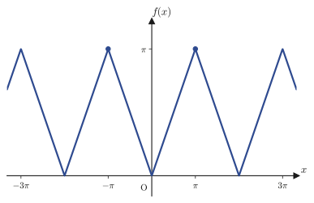
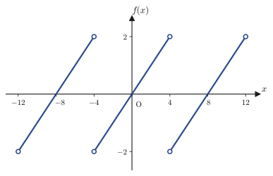

Chapter 28Definition of Fourier Series and Worked Examples
In the previous chapter (Chapter 27) we learned that the sequence of trigonometric functions $1,\ \cos x,\ \sin x,\ \cos2x,\ \sin2x,\ldots$ is mutually orthogonal on the interval $[-\pi,\pi]$ with respect to the “inner product of functions” $\langle f,g\rangle=\int_{-\pi}^{\pi}f(x)g(x)\,dx$, and we also learned about piecewise continuous and piecewise smooth functions, the class of functions we will need from here on. Just as in high school mathematics we could write a plane vector as a linear combination $\bm v=c_1\bm e_1+c_2\bm e_2$ of mutually orthogonal basis vectors $\bm e_1,\bm e_2$ and extract the coefficients $c_i=\bm v\cdot\bm e_i$ by means of the inner product, the same idea can be used in the world of functions. Write a periodic function as a “linear combination” of mutually orthogonal trigonometric functions, and extract the coefficients by means of the inner product (= integral)—this is the star of this chapter, the Fourier series.
In this chapter we first derive the coefficient formulas of the Fourier series for piecewise smooth periodic functions of period $2\pi$ (Section 28.1), and then extend the result to functions of general period $2L$ (Section 28.2). Next we see that the formulas become simpler for even and odd functions (the Fourier cosine and sine series), and that Euler's formula lets us rewrite the whole series elegantly in terms of complex exponential functions alone (the complex Fourier series) (Section 28.3). Finally, through the three concrete worked examples in the original notes—the square wave, the triangle wave, and the sawtooth wave—we aim to become able to use the formulas by actually working through the calculations by hand (Section 28.4). In the square-wave example, as an unexpected application of Fourier series, the circle constant $\pi$ appears expressed as an infinite series: the Leibniz series $1-\frac13+\frac15-\frac17+\cdots=\frac{\pi}{4}$. Note that the crucial question, “when does the Fourier series actually converge to the original function $f(x)$?”, is not yet pursued in depth in this chapter; it is treated rigorously in the next chapter, Chapter 29 (Convergence Theory of Fourier Series).
- The Fourier series expansion $f(x)=\sum_{k=0}^{\infty}(a_k\cos kx+b_k\sin kx)$ of a piecewise smooth periodic function of period $2\pi$, and the derivation of the Fourier coefficients $a_0,a_k,b_k$ using orthogonality
- Extension to general period $2L$: rewriting the coefficient formulas by the change of variables $t=\frac{\pi}{L}x$
- The Fourier cosine series of an even function and the Fourier sine series of an odd function
- The complex Fourier series $f(x)=\sum_{k=-\infty}^{\infty}C_ke^{i\frac{k\pi}{L}x}$ obtained with Euler's formula, and its relation $C_k=\frac{a_k-ib_k}{2}$ to the real coefficients
- Concrete examples: the Fourier sine series of the square wave and the Leibniz series, the Fourier cosine series of the triangle wave, and the sawtooth wave computed in two ways, with real and with complex coefficients
Source notes: Yasuhide Mochizuki, Mathematics Notes: Fourier Series and Transforms, pp. 6–14.
28.1 Fourier Series of Period 2π
Let us recall the conclusion of Chapter 27 once more. If we define the inner product of functions by $\langle f,g\rangle=\int_{-\pi}^{\pi}f(x)g(x)\,dx$, then the trigonometric functions in the sequence
$$ 1,\ \cos x,\ \sin x,\ \cos2x,\ \sin2x,\ \ldots,\ \cos kx,\ \sin kx,\ \ldots $$were mutually orthogonal on the interval $[-\pi,\pi]$. In the world of plane vectors, we decomposed an arbitrary vector $\bm v$ as $\bm v=c_1\bm e_1+c_2\bm e_2$ using an orthogonal basis $\bm e_1,\bm e_2$, and extracted the coefficients by the inner product $c_i=\bm v\cdot\bm e_i$ (precisely, when $\bm e_i$ is a unit vector). In just the same way, we should be able to “write a piecewise smooth periodic function $f(x)$ as a linear combination of infinitely many of these orthogonal trigonometric functions, and extract the coefficients by inner products (integrals),” and this is the goal of this section.
Theorem 28.1: Fourier series expansion of period 2π
A piecewise smooth periodic function $f(x)$ of period $2\pi$, defined for $-\pi \lt x\le\pi$, can be expressed as follows, except at its points of discontinuity.
\begin{equation} f(x)=\sum_{k=0}^{\infty}\bigl(a_k\cos kx+b_k\sin kx\bigr) \label{eq:28-fourier2pi} \end{equation}The right-hand side of Eq. \eqref{eq:28-fourier2pi} is called the Fourier series of $f(x)$, or the Fourier series expansion. Also, $a_k,b_k$ are called the Fourier coefficients, and they can be computed by the following formulas.
\begin{equation} a_0=\frac{1}{2\pi}\int_{-\pi}^{\pi}f(x)\,dx,\qquad a_k=\frac1\pi\int_{-\pi}^{\pi}f(x)\cos kx\,dx\ \ (k=1,2,\ldots) \label{eq:28-ak2pi} \end{equation} \begin{equation} b_k=\frac1\pi\int_{-\pi}^{\pi}f(x)\sin kx\,dx\ \ (k=0,1,2,\ldots) \label{eq:28-bk2pi} \end{equation}(Since $b_0=\frac1\pi\int f(x)\sin0\,dx=0$, the term $b_0\sin0x=0$ contributes nothing to the series. The $k=0$ term of the series is effectively just $a_0$.)
Writing out the right-hand side of Eq. \eqref{eq:28-fourier2pi} explicitly, we obtain
$$ f(x)=a_0+a_1\cos x+a_2\cos2x+\cdots+a_k\cos kx+\cdots+b_1\sin x+b_2\sin2x+\cdots+b_k\sin kx+\cdots $$The derivation below uses orthogonality to “fish out” these infinitely many unknowns $a_0,a_1,b_1,a_2,b_2,\ldots$ one at a time.
Recall: The orthogonality relations of Chapter 27 ($m,n$ are integers that are $0$ or greater, and $k$ is an integer with $k\ge1$)
$$ \int_{-\pi}^{\pi}\cos kx\,dx=0,\qquad \int_{-\pi}^{\pi}\sin kx\,dx=0 $$ $$ \int_{-\pi}^{\pi}\sin mx\cos nx\,dx=0\quad(0\ \text{or greater, for any integers}\ m,n) $$ $$ \int_{-\pi}^{\pi}\cos mx\cos nx\,dx= \begin{cases}\pi & (m=n\ne0)\\ 2\pi & (m=n=0)\\ 0 & (m\ne n)\end{cases}, \qquad \int_{-\pi}^{\pi}\sin mx\sin nx\,dx= \begin{cases}\pi & (m=n\ne0)\\ 0 & (m=n=0)\\ 0 & (m\ne n)\end{cases} $$The case where $m,n$ are positive integers has already been proved in Formula 27.4 and Formula 27.5 of Chapter 27. (The case $m=n=0$ is checked immediately by substituting $\cos0x=1$ and $\sin0x=0$ directly: $\int_{-\pi}^{\pi}\cos0x\cos0x\,dx=\int_{-\pi}^{\pi}1\,dx=2\pi$ and $\int_{-\pi}^{\pi}\sin0x\sin0x\,dx=\int_{-\pi}^{\pi}0\,dx=0$.) Since we will rely on these formulas again and again below, let us keep them ready to call up at any time.
Derivation [i]: for $a_0$
Integrate both sides of Eq. \eqref{eq:28-fourier2pi} from $x=-\pi$ to $x=\pi$ (this can also be regarded as multiplying both sides by $1=\cos0x$ and integrating). Assuming that the order of the series and the integral can be interchanged, we integrate term by term:
$$ \int_{-\pi}^{\pi}f(x)\,dx=\int_{-\pi}^{\pi}a_0\,dx+\int_{-\pi}^{\pi}a_1\cos x\,dx+\cdots+\int_{-\pi}^{\pi}a_k\cos kx\,dx+\cdots+\int_{-\pi}^{\pi}b_1\sin x\,dx+\cdots+\int_{-\pi}^{\pi}b_k\sin kx\,dx+\cdots $$On the right-hand side, every term other than the $a_0\,dx$ term becomes exactly $0$ by the first formula of “Recall,” $\int_{-\pi}^{\pi}\cos kx\,dx=0$ and $\int_{-\pi}^{\pi}\sin kx\,dx=0\ (k=1,2,\ldots)$, and so vanishes. Only the $a_0$ term survives, and
$$ \int_{-\pi}^{\pi}f(x)\,dx=a_0\int_{-\pi}^{\pi}1\,dx=a_0\bigl[x\bigr]_{-\pi}^{\pi}=2\pi a_0 $$(since $a_0$ is a constant that does not depend on $x$, it can be taken outside the integral). Therefore we obtain
$$ a_0=\frac{1}{2\pi}\int_{-\pi}^{\pi}f(x)\,dx $$This is exactly the mean value of $f(x)$ over the interval $[-\pi,\pi]$ (the integral mean)—which also agrees with the intuition that if we level out all the “ups and downs” of the trigonometric functions by integrating, all that remains is the contribution of the constant term $a_0$.
Derivation [ii]: for $a_k$ ($k=1,2,\ldots$)
This time, multiply both sides of Eq. \eqref{eq:28-fourier2pi} by $\cos kx$ (with $k$ held fixed) and then integrate from $-\pi$ to $\pi$.
$$ \int_{-\pi}^{\pi}f(x)\cos kx\,dx=\int_{-\pi}^{\pi}a_0\cos kx\,dx+\sum_{j=1}^{\infty}\int_{-\pi}^{\pi}a_j\cos jx\cos kx\,dx+\sum_{j=1}^{\infty}\int_{-\pi}^{\pi}b_j\sin jx\cos kx\,dx $$We examine the right-hand side one term at a time.
- $\int_{-\pi}^{\pi}a_0\cos kx\,dx=a_0\int_{-\pi}^{\pi}\cos kx\,dx=0$ (since $k\ge1$, this is the first formula of “Recall”).
- $\int_{-\pi}^{\pi}b_j\sin jx\cos kx\,dx=0$ (for every $j$, by the second formula of “Recall,” $\int\sin mx\cos nx\,dx=0$).
- By the third formula of “Recall,” $\int_{-\pi}^{\pi}a_j\cos jx\cos kx\,dx$ is $0$ when $j\ne k$; only when $j=k$ does a $\pi$ survive.
In other words, of the infinitely many terms, only the term $a_k\cos kx\cos kx=a_k\cos^2kx$ corresponding to $j=k$ survives, and all the others vanish. Hence
$$ \int_{-\pi}^{\pi}f(x)\cos kx\,dx=a_k\int_{-\pi}^{\pi}\cos^2kx\,dx=a_k\cdot\pi $$Therefore we obtain
$$ a_k=\frac1\pi\int_{-\pi}^{\pi}f(x)\cos kx\,dx\qquad(k=1,2,\ldots) $$Thanks to orthogonality, the operation of “multiplying both sides by $\cos kx$ and integrating” works as a filter that “extracts only the component in the direction of $\cos kx$”—this is mathematically exactly the same mechanism as the inner product $\bm v\cdot\bm e_k$ extracting only the component of $\bm v$ in the direction of $\bm e_k$.
Derivation [iii]: for $b_k$ ($k=1,2,\ldots$)
Similarly, multiply both sides of Eq. \eqref{eq:28-fourier2pi} by $\sin kx$ and integrate from $-\pi$ to $\pi$.
$$ \int_{-\pi}^{\pi}f(x)\sin kx\,dx=\int_{-\pi}^{\pi}a_0\sin kx\,dx+\sum_{j=1}^{\infty}\int_{-\pi}^{\pi}a_j\cos jx\sin kx\,dx+\sum_{j=1}^{\infty}\int_{-\pi}^{\pi}b_j\sin jx\sin kx\,dx $$For exactly the same reason as in [ii], the term $a_0\sin kx$ and the terms $a_j\cos jx\sin kx$ (for every $j$) become $0$. For the term $b_j\sin jx\sin kx$, by the fourth formula of “Recall,” the integral is $0$ when $j\ne k$, and only when $j=k$ does $\pi$ remain. Hence
$$ \int_{-\pi}^{\pi}f(x)\sin kx\,dx=b_k\int_{-\pi}^{\pi}\sin^2kx\,dx=b_k\pi $$ $$ \therefore\ b_k=\frac1\pi\int_{-\pi}^{\pi}f(x)\sin kx\,dx\qquad(k=1,2,\ldots) $$This completes the derivation of all the coefficient formulas of Theorem 28.1.
Caution: Don't be puzzled by the special coefficient $\frac{1}{2\pi}$ of $a_0$
In Theorem 28.1, only $a_0$ has a coefficient $\frac{1}{2\pi}$ that differs from that of the other $a_k\ (k\ge1)$, and the series in Eq. \eqref{eq:28-fourier2pi} contains $a_0\cos0x=a_0$ just as it is (without any division). On the other hand, many textbooks (and, in fact, even the original notes' own worked examples, which are treated in Section 28.4 of this chapter) adopt the convention of “computing $a_0$ by the same formula $\frac1\pi\int f(x)\cos kx\,dx$ as $a_k$, and putting it into the series in the form $\dfrac{a_0}{2}$.” That is, if we let $c_0:=\frac1\pi\int_{-\pi}^{\pi}f(x)\,dx$ (obtained by substituting $k=0$ into the formula of the same form as $a_k$), then $c_0=2a_0$, and
$$ f(x)=a_0+\sum_{k=1}^{\infty}(a_k\cos kx+b_k\sin kx)=\frac{c_0}{2}+\sum_{k=1}^{\infty}(a_k\cos kx+b_k\sin kx) $$These are two ways of writing the same series for the same function. The two are mathematically identical, and neither is better than the other. In this book we adopt the form of Theorem 28.1 for the theorem itself (in which $a_0$ includes $\frac1{2\pi}$ from the start), but in the worked examples of Section 28.4 we follow the notation of the original notes and use the form $\dfrac{a_0}{2}+\sum_{k=1}^\infty(\cdots)$ (in which $a_0$ is computed by the same formula as $a_k$). So that you will not be thrown off whichever convention a textbook follows, let us remember this correspondence.

Example 28.1: Fourier series of $f(x)=x$ (period 2π)
Find the Fourier series of the function obtained by extending $f(x)=x\ (-\pi \lt x\le\pi)$ with period $2\pi$ (Figure 28.1).
Solution. We use the formulas of Theorem 28.1. First we find $a_0$. Since $f(x)=x$ is an odd function ($f(-x)=-f(x)$), its integral over the symmetric interval $[-\pi,\pi]$ is
$$ a_0=\frac{1}{2\pi}\int_{-\pi}^{\pi}x\,dx=0 $$(when an odd function is integrated over an interval symmetric about the origin, the part with $x \gt 0$ and the part with $x \lt 0$ cancel each other exactly, giving $0$). Next we find $a_k$ ($k\ge1$). Since $x\cos kx$ is also an odd function (odd function × even function = odd function), for the same reason
$$ a_k=\frac1\pi\int_{-\pi}^{\pi}x\cos kx\,dx=0 $$Finally we find $b_k$. Since $x\sin kx$ is an even function (odd function × odd function = even function), we can use $\int_{-\pi}^{\pi}=2\int_{0}^{\pi}$. By integration by parts (taking $u=x,\ dv=\sin kx\,dx$ gives $du=dx,\ v=-\frac1k\cos kx$),
$$ \int_0^{\pi}x\sin kx\,dx=\Bigl[-\frac{x}{k}\cos kx\Bigr]_0^{\pi}+\frac1k\int_0^{\pi}\cos kx\,dx=-\frac{\pi}{k}\cos k\pi+\frac1k\Bigl[\frac1k\sin kx\Bigr]_0^{\pi}=-\frac{\pi(-1)^k}{k}+0 $$(we used $\cos k\pi=(-1)^k$ and $\sin k\pi=0$ (where $k$ is an integer)). Therefore
$$ b_k=\frac1\pi\cdot2\times\left(-\frac{\pi(-1)^k}{k}\right)=\frac{2(-1)^{k+1}}{k} $$From the above, the Fourier series is
$$ f(x)=\sum_{k=1}^{\infty}\frac{2(-1)^{k+1}}{k}\sin kx=2\sin x-\sin2x+\frac23\sin3x-\frac12\sin4x+\cdots $$(verified with SymPy: $a_0=a_k=0$ and $b_k=2(-1)^{k+1}/k$ for $k=1,\ldots,5$). The reason that $a_0=a_k=0$ is that $f(x)=x$ is an odd function—in general, no $\cos$ terms at all appear in the Fourier series of an odd function. We will prove this fact in general in Section 28.3.
28.2 Fourier Series of General Period 2L
Theorem 28.1 can be used only for functions whose period is exactly $2\pi$. In practice, however, the periodic functions that arise do not necessarily have period $2\pi$—for example, the period of the alternating-current power supplies commonly used in engineering is $1/50$ second or $1/60$ second. So let us extend the formulas to the general case of period $2L$ ($L$ a positive real number).
Theorem 28.2: Fourier series expansion of period 2L
A piecewise smooth periodic function $f(x)$ of period $2L$, defined on $-L \lt x\le L$, can be expressed as a Fourier series as follows, except at points of discontinuity.
\begin{equation} f(x)=\sum_{k=0}^{\infty}\left(a_k\cos\frac{k\pi}{L}x+b_k\sin\frac{k\pi}{L}x\right) \label{eq:28-fourier2L} \end{equation}where
$$ a_0=\frac{1}{2L}\int_{-L}^{L}f(x)\,dx,\qquad a_k=\frac1L\int_{-L}^{L}f(x)\cos\frac{k\pi}{L}x\,dx,\qquad b_k=\frac1L\int_{-L}^{L}f(x)\sin\frac{k\pi}{L}x\,dx\qquad(k\in\N) $$Derivation: From Theorem 28.1 to Theorem 28.2 (change of variables)
Consider a piecewise smooth periodic function $F(t)\ (-\pi \lt t\le\pi)$ of period $2\pi$. By Theorem 28.1,
$$ F(t)=\sum_{k=0}^{\infty}(a_k\cos kt+b_k\sin kt) $$Now we make the change of variables $t=\dfrac{\pi}{L}x$. When $t$ runs from $-\pi$ to $\pi$, $x=\dfrac{L}{\pi}t$ runs exactly from $-L$ to $L$ (since $t$ and $x$ are proportional, the corresponding ranges also widen in the same proportion). So if we let $f(x):=F\!\left(\frac{\pi}{L}x\right)$, then $f(x)$ is a function of period $2L$ defined on $-L \lt x\le L$, and
$$ f(x)=F\!\left(\frac{\pi}{L}x\right)=\sum_{k=0}^{\infty}\left(a_k\cos\frac{k\pi}{L}x+b_k\sin\frac{k\pi}{L}x\right) $$so we obtain the form of the series (Eq. \eqref{eq:28-fourier2L}). Next, let us check how the coefficients $a_k,b_k$ can be written as integrals of $f$ itself. Substituting $F(t)$ into the coefficient formula of Theorem 28.1 (the case $k\ge1$) gives
$$ a_k=\frac1\pi\int_{-\pi}^{\pi}F(t)\cos kt\,dt $$Now we perform the substitution $t=\dfrac{\pi}{L}x$. We have $dt=\dfrac{\pi}{L}dx$ (this factor appears when we differentiate $t$ with respect to $x$), and the limits of integration $t:-\pi\to\pi$ correspond to $x:-L\to L$, so
$$ a_k=\frac1\pi\int_{-L}^{L}F\!\left(\frac{\pi}{L}x\right)\cos\!\left(k\cdot\frac{\pi}{L}x\right)\cdot\frac{\pi}{L}\,dx =\frac1\pi\cdot\frac{\pi}{L}\int_{-L}^{L}f(x)\cos\frac{k\pi}{L}x\,dx =\frac1L\int_{-L}^{L}f(x)\cos\frac{k\pi}{L}x\,dx $$(Note that the $\pi$ cancels because $\dfrac1\pi\cdot\dfrac{\pi}{L}=\dfrac1L$.) By exactly the same substitution, we obtain the formulas of Theorem 28.2 for $a_0,b_k$ as well.

Example 28.2: Fourier series of $f(x)=x$ (period 4)
Find the Fourier series of the function obtained by extending $f(x)=x\ (-2 \lt x\le2)$ with period 4 ($L=2$, Figure 28.2).
Solution. We use the formulas of Theorem 28.2 (with $L=2$). Since $f(x)=x$ is an odd function, as in Example 28.1, $a_0=0$ and $a_k=0\ (k\ge1)$ hold for exactly the same reason (the integral of an odd function over a symmetric interval). For $b_k$, we use the fact that $x\sin\frac{k\pi}{2}x$ is an even function and compute by integration by parts ($u=x,\ dv=\sin\frac{k\pi}{2}x\,dx$ and $v=-\frac{2}{k\pi}\cos\frac{k\pi}{2}x$).
$$ b_k=\frac12\int_{-2}^{2}x\sin\frac{k\pi}{2}x\,dx=\int_0^2 x\sin\frac{k\pi}{2}x\,dx =\left[-\frac{2x}{k\pi}\cos\frac{k\pi}{2}x\right]_0^2+\frac{2}{k\pi}\int_0^2\cos\frac{k\pi}{2}x\,dx $$The second term on the right-hand side is $\left[\frac{4}{k^2\pi^2}\sin\frac{k\pi}{2}x\right]_0^2=\frac{4}{k^2\pi^2}\sin k\pi=0$ (since $k$ is an integer, $\sin k\pi=0$). The first term is $-\frac{4}{k\pi}\cos k\pi=-\frac{4(-1)^k}{k\pi}$ at $x=2$ and $0$ at $x=0$, so
$$ b_k=-\frac{4(-1)^k}{k\pi}=\frac{4(-1)^{k+1}}{k\pi} $$Hence
$$ f(x)=\sum_{k=1}^{\infty}\frac{4(-1)^{k+1}}{k\pi}\sin\frac{k\pi}{2}x $$(verified with SymPy: $a_0=a_k=0$ and $b_k=4(-1)^{k+1}/(\pi k)$ for $k=1,\ldots,4$). In general, a similar computation shows that for the same form $f(x)=x\ (-L \lt x\le L)$ we get $b_k=\dfrac{2L(-1)^{k+1}}{k\pi}$ (let us check that substituting $L=\pi$ returns exactly $b_k=2(-1)^{k+1}/k$ of Example 28.1).
28.3 Fourier Cosine and Sine Series and the Complex Fourier Series
In Example 28.1 and Example 28.2, for $f(x)=x$ (an odd function) we had $a_0=a_k=0$, and only the $\sin$ terms remained. This is no accident. In general, when $f(x)$ is an even function or an odd function, the Fourier series simplifies as follows.
Theorem 28.3: Fourier cosine series and Fourier sine series
Let $f(x)$ be a piecewise smooth periodic function of period $2L$.
(I) If $f(x)$ is an even function, then $f(x)$ can be expressed as a Fourier cosine series consisting only of $\cos$ terms.
$$ f(x)=\sum_{k=0}^{\infty}a_k\cos\frac{k\pi}{L}x $$(II) If $f(x)$ is an odd function, then $f(x)$ can be expressed as a Fourier sine series consisting only of $\sin$ terms.
$$ f(x)=\sum_{k=0}^{\infty}b_k\sin\frac{k\pi}{L}x $$(As in (I), the sum is formally taken from $k=0$. However, since $\sin0=0$, we have $b_0\sin0x=0$, so this term actually contributes nothing, and the result is the same as when the sum is taken from $k=1$.)
Intuition: Why do only $\cos$ terms remain for an even function?
Look at the integrand of $b_k=\frac1L\int_{-L}^{L}f(x)\sin\frac{k\pi}{L}x\,dx$. Since $f(x)$ is an even function and $\sin\frac{k\pi}{L}x$ is an odd function, the product $f(x)\sin\frac{k\pi}{L}x$ is “even × odd = odd.” When an odd function is integrated over the symmetric interval $[-L,L]$, the part with $x \gt 0$ and the part with $x \lt 0$ cancel each other exactly, and the whole integral becomes $0$. Hence $b_k=0$ holds for every $k$, and the $\sin$ terms vanish from the start because their coefficients are zero. For an odd function, applying the same reasoning to $a_k$ gives $a_k=0$. Let us write out this general proof ourselves in Exercise 28.3.
Next, we use Euler's formula to rewrite the Fourier series using only the complex exponential function $e^{i\theta}$, instead of the real functions $\cos,\sin$. As we learned in Chapter 23, the complex exponential function is defined by
$$ e^{i\theta}=\cos\theta+i\sin\theta $$(here $i$ is the imaginary unit, $i^2=-1$), and we called this Euler's formula. Substituting $\theta\to-\theta$ and using $\cos(-\theta)=\cos\theta$ and $\sin(-\theta)=-\sin\theta$, we also obtain $e^{-i\theta}=\cos\theta-i\sin\theta$. By adding and subtracting these two equations side by side, we can conversely express $\cos\theta,\sin\theta$ in terms of $e^{\pm i\theta}$.
$$ \cos\theta=\frac{e^{i\theta}+e^{-i\theta}}{2},\qquad\qquad \sin\theta=\frac{e^{i\theta}-e^{-i\theta}}{2i} $$Substituting $\theta=\frac{k\pi}{L}x$ into these two equations, we can rewrite $\cos\frac{k\pi}{L}x,\ \sin\frac{k\pi}{L}x$ in the Fourier series in terms of complex exponential functions.
Theorem 28.4: Complex Fourier series of period 2L
A piecewise smooth periodic function $f(x)$ of period $2L$, defined on $-L \lt x\le L$, can be expressed as a complex Fourier series as follows, except at points of discontinuity.
$$ f(x)=\sum_{k=-\infty}^{\infty}C_ke^{i\frac{k\pi}{L}x} \qquad\text{where}\qquad C_k=\frac{1}{2L}\int_{-L}^{L}f(x)\,e^{-i\frac{k\pi}{L}x}\,dx\quad(k\in\Z) $$Derivation: From the real Fourier series to the complex Fourier series
We substitute the rewriting by Euler's formula prepared above into the series $f(x)=\sum_{k=0}^{\infty}\left(a_k\cos\frac{k\pi}{L}x+b_k\sin\frac{k\pi}{L}x\right)$ of Theorem 28.2.
$$ f(x)=\sum_{k=0}^{\infty}\left\{\frac{a_k}{2}\left(e^{i\frac{k\pi}{L}x}+e^{-i\frac{k\pi}{L}x}\right)+\frac{b_k}{2i}\left(e^{i\frac{k\pi}{L}x}-e^{-i\frac{k\pi}{L}x}\right)\right\} $$We collect the coefficient of $e^{i\frac{k\pi}{L}x}$ and the coefficient of $e^{-i\frac{k\pi}{L}x}$ separately (noting that $\frac{1}{2i}=-\frac{i}{2}$, we first rewrite $\frac{b_k}{2i}=-\frac{ib_k}{2}$ and then rearrange).
$$ f(x)=\sum_{k=0}^{\infty}\left(\frac{a_k-ib_k}{2}\,e^{i\frac{k\pi}{L}x}+\frac{a_k+ib_k}{2}\,e^{-i\frac{k\pi}{L}x}\right) $$Let us first set aside the $k=0$ term of this sum. Since $e^{i0}=e^{-i0}=1$, the $k=0$ term is $\dfrac{a_0}{2}\cdot1+\dfrac{a_0}{2}\cdot1=a_0$ (using $b_0=0$), which returns exactly to the constant term $a_0$ of the original series. So we let $C_0:=a_0$. For the remaining terms with $k\ge1$, we let $C_k:=\dfrac{a_k-ib_k}{2}$ and $C_{-k}:=\dfrac{a_k+ib_k}{2}$ ($k\ge1$). Then
$$ f(x)=C_0+\sum_{k=1}^{\infty}C_ke^{i\frac{k\pi}{L}x}+\sum_{k=1}^{\infty}C_{-k}e^{-i\frac{k\pi}{L}x} $$The sum in the third term, if we relabel the index by $k\to-k$, equals $\displaystyle\sum_{k=-\infty}^{-1}C_ke^{i\frac{k\pi}{L}x}$. Therefore
$$ f(x)=C_0+\sum_{k=1}^{\infty}C_ke^{i\frac{k\pi}{L}x}+\sum_{k=-\infty}^{-1}C_ke^{i\frac{k\pi}{L}x}=\sum_{k=-\infty}^{\infty}C_ke^{i\frac{k\pi}{L}x} $$(The three ranges $k=0$, $k\ge1$, and $k\le-1$ exhaust all the integers exactly, without overlap, so there is no danger of counting any $k$ twice.) This shows the form of the series. Finally, we check the expression for $C_k$ as an integral. For $k\ge1$, substituting the formulas for $a_k,b_k$ of Theorem 28.2 into $C_k=\frac{a_k-ib_k}{2}$ gives
$$ C_k=\frac12\left(\frac1L\int_{-L}^{L}f(x)\cos\frac{k\pi}{L}x\,dx-i\cdot\frac1L\int_{-L}^{L}f(x)\sin\frac{k\pi}{L}x\,dx\right)=\frac{1}{2L}\int_{-L}^{L}f(x)\left(\cos\frac{k\pi}{L}x-i\sin\frac{k\pi}{L}x\right)dx $$By Euler's formula, the expression in parentheses is nothing other than $e^{-i\frac{k\pi}{L}x}$, so we obtain $C_k=\frac{1}{2L}\int_{-L}^{L}f(x)e^{-i\frac{k\pi}{L}x}dx$. For $k\le-1$, one can check that substituting the same formulas into $C_k=C_{-(-k)}=\frac{a_{-k}+ib_{-k}}{2}$ also gives an expression of exactly the same form (using the parity of $\cos,\sin$, namely $\cos(-\theta)=\cos\theta,\ \sin(-\theta)=-\sin\theta$) (check this yourself). Thus we have found that, regardless of the sign of $k$, we can write uniformly $C_k=\frac{1}{2L}\int_{-L}^{L}f(x)e^{-i\frac{k\pi}{L}x}dx$.
Math Note: Correspondence between the complex and real Fourier coefficients
From the derivation above, we obtain the following transformation formulas ($k\ge1$).
$$ C_k=\frac{a_k-ib_k}{2},\qquad C_{-k}=\frac{a_k+ib_k}{2},\qquad\text{conversely}\qquad a_k=C_k+C_{-k},\qquad b_k=i(C_k-C_{-k}) $$Moreover, if $f(x)$ is a real-valued function, then $C_{-k}=\overline{C_k}$ (complex conjugate) holds. This can be confirmed from the definition of $C_k$ by using the fact that $f(x)$ is real and $\overline{e^{-i\theta}}=e^{i\theta}$. Compared with the real Fourier series, the complex Fourier series has the advantages that its formulas are symmetric and elegant, and that the computation of sums and integrals (especially integration by parts) can be completed with the exponential function alone, so it is easy to carry out mechanically. On the other hand, note that one needs to get used to the “two-sided sum,” in which $k$ runs over both positive and negative values.

Example 28.3: Fourier cosine series of $f(x)=x^2$ (period 2π)
Find the Fourier series of the function obtained by extending $f(x)=x^2\ (-\pi \lt x\le\pi)$ with period $2\pi$ (Figure 28.3).
Solution. $f(x)=x^2$ is an even function ($f(-x)=(-x)^2=x^2=f(x)$), so by Theorem 28.3(I) it is a Fourier cosine series, and $b_k=0$. For $a_0$ we have
$$ a_0=\frac{1}{2\pi}\int_{-\pi}^{\pi}x^2\,dx=\frac{1}{2\pi}\left[\frac{x^3}{3}\right]_{-\pi}^{\pi}=\frac{1}{2\pi}\cdot\frac{2\pi^3}{3}=\frac{\pi^2}{3} $$For $a_k\ (k\ge1)$, since the integrand $x^2\cos kx$ is an even function, we write $\int_{-\pi}^\pi=2\int_0^\pi$ and compute by integration by parts, repeated twice. With $u=x^2,\ dv=\cos kx\,dx$ we have $du=2x\,dx,\ v=\frac1k\sin kx$, so
$$ \int_0^{\pi}x^2\cos kx\,dx=\left[\frac{x^2}{k}\sin kx\right]_0^{\pi}-\frac2k\int_0^{\pi}x\sin kx\,dx $$The first term is zero because $\sin k\pi=0$. The second term, $\int_0^\pi x\sin kx\,dx$, has exactly the same form as (an intermediate step in) the computation of Example 28.1, and equals $-\frac{\pi(-1)^k}{k}$. Therefore
$$ \int_0^{\pi}x^2\cos kx\,dx=0-\frac2k\left(-\frac{\pi(-1)^k}{k}\right)=\frac{2\pi(-1)^k}{k^2} $$ $$ a_k=\frac1\pi\cdot2\times\frac{2\pi(-1)^k}{k^2}=\frac{4(-1)^k}{k^2} $$Hence
$$ f(x)=\frac{\pi^2}{3}+\sum_{k=1}^{\infty}\frac{4(-1)^k}{k^2}\cos kx=\frac{\pi^2}{3}-4\cos x+\cos2x-\frac49\cos3x+\cdots $$(verified with SymPy: $a_0=\pi^2/3$ and $a_k=4(-1)^k/k^2$ for $k=1,\ldots,4$). Incidentally, if we formally substitute $x=\pi$ ($f(\pi)=\pi^2$) into this expression, then since $\cos k\pi=(-1)^k$ we get $\pi^2=\frac{\pi^2}{3}+\sum_{k=1}^\infty\frac{4}{k^2}$, that is, $\sum_{k=1}^\infty\frac1{k^2}=\frac{\pi^2}{6}$, the answer to the famous “Basel problem”—however, the grounds for substituting into the series here (the theory of pointwise convergence), even though this is not a point of discontinuity on the boundary, will be studied in the next chapter, so here we only present it as an interesting by-product.
Example 28.4: Complex Fourier series of $f(x)=x$ (period 2π)
For the function $f(x)=x\ (-\pi \lt x\le\pi)$ (period 2π) of Example 28.1, find the complex Fourier coefficients $C_k$ directly, and verify that they are consistent with the result $a_k=0,\ b_k=2(-1)^{k+1}/k$ of Example 28.1.
Solution. By Theorem 28.4 ($L=\pi$), for $k\ne0$ we have
$$ C_k=\frac{1}{2\pi}\int_{-\pi}^{\pi}x\,e^{-ikx}\,dx $$Integration by parts ($u=x,\ dv=e^{-ikx}dx$, $v=-\frac{1}{ik}e^{-ikx}=\frac{i}{k}e^{-ikx}$) gives
$$ \int_{-\pi}^{\pi}x\,e^{-ikx}\,dx=\left[\frac{ix}{k}e^{-ikx}\right]_{-\pi}^{\pi}-\frac{i}{k}\int_{-\pi}^{\pi}e^{-ikx}\,dx $$The second term on the right-hand side vanishes when $k$ is a nonzero integer: $\int_{-\pi}^{\pi}e^{-ikx}dx=\left[\frac{i}{k}e^{-ikx}\right]_{-\pi}^{\pi}=\frac{i}{k}\bigl(e^{-ik\pi}-e^{ik\pi}\bigr)=\frac{i}{k}\bigl((-1)^k-(-1)^k\bigr)=0$ (we used $e^{\pm ik\pi}=\cos k\pi\pm i\sin k\pi=(-1)^k$). The first term is
$$ \left[\frac{ix}{k}e^{-ikx}\right]_{-\pi}^{\pi}=\frac{i\pi}{k}e^{-ik\pi}-\frac{i(-\pi)}{k}e^{ik\pi}=\frac{i\pi}{k}(-1)^k+\frac{i\pi}{k}(-1)^k=\frac{2i\pi(-1)^k}{k} $$Therefore
$$ C_k=\frac{1}{2\pi}\cdot\frac{2i\pi(-1)^k}{k}=\frac{i(-1)^k}{k}\qquad(k\ne0) $$Also, $C_0=a_0=0$ (the value found in Example 28.1). (Verified with SymPy: $C_k=i(-1)^k/k$ for $k=\pm1,\pm2,\pm3$.) Let us see that this corresponds to $a_k,b_k$ of Example 28.1. By the formula in the “Math Note” box,
$$ C_k=\frac{a_k-ib_k}{2}=\frac{0-i\cdot\frac{2(-1)^{k+1}}{k}}{2}=\frac{-i(-1)^{k+1}}{k}=\frac{i(-1)^k}{k} $$This agrees completely with the directly computed $C_k$. With concrete numerical values, we have confirmed that the only difference is whether we view the same Fourier series of the same function in its real form ($\cos,\sin$) or in its complex form ($e^{ikx}$).
28.4 Examples of Computing Fourier Series
From here on we deal with the three concrete worked examples in the original notes—the square wave, the triangle wave, and the sawtooth wave. In every one of them we compute $a_0$ by the same formula as $a_k$, namely $\frac1\pi\int f(x)\cos kx\,dx$ (for a general period, $\frac1L\int f(x)\cos\frac{k\pi}{L}x\,dx$), and put it into the series in the form $\dfrac{a_0}{2}$—that is, we use the other way of writing, explained in the “Caution” box of Section 28.1. This is the notation of the original notes themselves, and it is also the one used as standard in many textbooks.
Example 28.5: Fourier sine series of a square wave (Example No. 1 of the original notes)
Let $f(x)=\begin{cases}-\dfrac{\pi}{4} & (-\pi \lt x\le0)\\[4pt]\dfrac{\pi}{4} & (0 \lt x\le\pi)\end{cases}$ (period 2π, Figure 28.4). Expand $f(x)$ in a Fourier series.
Solution. Let $f(x)=\dfrac{a_0}{2}+\displaystyle\sum_{k=1}^{\infty}(a_k\cos kx+b_k\sin kx)$.
[i] The coefficients $a_k\ (k=0,1,2,\ldots)$.
$$ a_k=\frac1\pi\int_{-\pi}^{\pi}f(x)\cos kx\,dx=\frac1\pi\int_0^{\pi}\frac{\pi}{4}\cos kx\,dx+\frac1\pi\int_{-\pi}^0\left(-\frac{\pi}{4}\right)\cos kx\,dx $$(For $k=0$ as well, the same expression can be used, with $\cos0x=1$.) Carrying out the integrations, we get
$$ =\frac14\left[\frac1k\sin kx\right]_0^{\pi}-\frac14\left[\frac1k\sin kx\right]_{-\pi}^0=\frac14\cdot\frac1k(\sin k\pi-0)-\frac14\cdot\frac1k(0-\sin(-k\pi))=0 $$(We used $\sin k\pi=0,\ \sin(-k\pi)=0$. For $k=0$, both sides are $0$ from the start.) Hence $a_k=0$ (for all $k=0,1,2,\ldots$).
[ii] The coefficients $b_k\ (k=1,2,3,\ldots)$.
$$ b_k=\frac1\pi\int_{-\pi}^{\pi}f(x)\sin kx\,dx=\frac1\pi\int_0^{\pi}\frac{\pi}{4}\sin kx\,dx+\frac1\pi\int_{-\pi}^0\left(-\frac{\pi}{4}\right)\sin kx\,dx $$ $$ =\frac14\left[-\frac1k\cos kx\right]_0^{\pi}-\frac14\left[-\frac1k\cos kx\right]_{-\pi}^0 $$The first term is $-\frac1{4k}(\cos k\pi-\cos0)=-\frac1{4k}\bigl((-1)^k-1\bigr)=\frac{1-(-1)^k}{4k}$. The second term is $-\frac1{4k}(\cos0-\cos(-k\pi))=-\frac1{4k}\bigl(1-(-1)^k\bigr)=-\frac{1-(-1)^k}{4k}$. Since this is a subtraction, we must be careful with the sign:
$$ b_k=\frac{1-(-1)^k}{4k}-\left(-\frac{1-(-1)^k}{4k}\right)=\frac{1-(-1)^k}{2k} $$From [i] and [ii],
$$ f(x)=\sum_{k=1}^{\infty}\frac{1-(-1)^k}{2k}\sin kx $$This is the result (verified with SymPy: $a_k=0$ and $b_k=(1-(-1)^k)/(2k)$ for $k=1,\ldots,5$).
Discussion (connection with π). The coefficient $\dfrac{1-(-1)^k}{2k}$ vanishes when $k$ is even, because $1-(-1)^k=0$; only when $k$ is odd does $\dfrac{1-(-1)}{2k}=\dfrac1k$ remain. Therefore
$$ f(x)=\sin x+\frac13\sin3x+\frac15\sin5x+\cdots $$Now let us substitute $x=\dfrac{\pi}{2}$. From the graph (Figure 28.4) it is clear that $f\!\left(\frac{\pi}{2}\right)=\frac{\pi}{4}$. On the other hand, since $\sin\frac{\pi}{2}=\sin\frac{5\pi}{2}=\sin\frac{9\pi}{2}=\cdots=1$ and $\sin\frac{3\pi}{2}=\sin\frac{7\pi}{2}=\cdots=-1$, we can derive
$$ \frac{\pi}{4}=f\!\left(\frac\pi2\right)=1-\frac13+\frac15-\frac17+\cdots=\sum_{k=1}^{\infty}\frac{(-1)^{k-1}}{2k-1} $$which is the Leibniz series for π—a surprisingly simple expression of the number $\pi$ as an infinite series. Fourier series are not merely “a tool for decomposing waves”; they also show us $\pi$ making an appearance in unexpected places.
This series, however, converges very slowly. Computing the partial sums $S_N=\sum_{k=1}^{N}\frac{(-1)^{k-1}}{2k-1}$ numerically, we obtain
| $N$ | 10 | 100 | 1000 | 10000 |
|---|---|---|---|---|
| $S_N$ | 0.760460 | 0.782898 | 0.785148 | 0.785373 |
| Error | $-2.5\times10^{-2}$ | $-2.5\times10^{-3}$ | $-2.5\times10^{-4}$ | $-2.5\times10^{-5}$ |
($\pi/4=0.785398\ldots$). Each time the number of terms is multiplied by 10, the error becomes roughly one-tenth—in other words, the error decreases roughly in inverse proportion to the number of terms, which is a very slow convergence. This phenomenon, and how the series behaves near a jump discontinuity (the Gibbs phenomenon), will be checked numerically in Exercise 28.4.

Math Note: Formulas for $\int x\cos kx\,dx$ and $\int x\sin kx\,dx$ (one integration by parts)
In Examples 28.6 and 28.7, which we treat next, we use the indefinite integrals of $x\cos kx$ and $x\sin kx$ repeatedly. Let us collect in advance, as formulas, the results of carrying out integration by parts once. Setting $u=x,\ dv=\cos kx\,dx$ ($du=dx,\ v=\frac1k\sin kx$) and integrating by parts, we get
$$ \int x\cos kx\,dx=x\cdot\frac1k\sin kx-\int\frac1k\sin kx\,dx=\frac1kx\sin kx+\frac1{k^2}\cos kx $$Similarly, setting $u=x,\ dv=\sin kx\,dx$ ($v=-\frac1k\cos kx$), we get
$$ \int x\sin kx\,dx=-x\cdot\frac1k\cos kx+\int\frac1k\cos kx\,dx=-\frac1kx\cos kx+\frac1{k^2}\sin kx $$(The constants of integration are omitted.) The very same computation works with $\cos ax,\sin ax$ ($a\ne0$ a real constant) in place of $\cos kx,\sin kx$, and gives $\int x\cos ax\,dx=\frac1ax\sin ax+\frac1{a^2}\cos ax$ and $\int x\sin ax\,dx=-\frac1ax\cos ax+\frac1{a^2}\sin ax$—in Example 28.7 we use this general form in the case $a=\frac{k\pi}{4}$.
Example 28.6: Fourier cosine series of a triangle wave (Example No. 2 of the original notes)
Let $f(x)=\begin{cases}-x & (-\pi \lt x\le0)\\ x & (0 \lt x\le\pi)\end{cases}$ (that is, $f(x)=|x|$, period 2π, Figure 28.5). Expand $f(x)$ in a Fourier series.
Solution. Let $f(x)=\dfrac{a_0}{2}+\displaystyle\sum_{k=1}^{\infty}(a_k\cos kx+b_k\sin kx)$.
[i] The coefficients $a_k\ (k=1,2,\ldots)$. We use the indefinite integral formula $\int x\cos kx\,dx=\frac1kx\sin kx+\frac1{k^2}\cos kx$ from the “Math Note” above.
$$ a_k=\frac1\pi\int_{-\pi}^{\pi}f(x)\cos kx\,dx=\frac1\pi\left(\int_0^{\pi}x\cos kx\,dx-\int_{-\pi}^0 x\cos kx\,dx\right) $$ $$ =\frac1\pi\left[\frac1kx\sin kx+\frac1{k^2}\cos kx\right]_0^{\pi}-\frac1\pi\left[\frac1kx\sin kx+\frac1{k^2}\cos kx\right]_{-\pi}^0 $$In each square bracket, the term $\frac1kx\sin kx$ vanishes at both the upper and the lower limit, since $\sin k\pi=\sin0=0$ (for $x=0,\pm\pi$ we always have $\sin kx=0$). Only the terms $\frac1{k^2}\cos kx$ remain, so
$$ =\frac1\pi\left\{\frac{(-1)^k}{k^2}-\frac1{k^2}\right\}-\frac1\pi\left\{\frac1{k^2}-\frac{(-1)^k}{k^2}\right\}=\frac{2\bigl\{(-1)^k-1\bigr\}}{\pi k^2}\qquad(k=1,2,\ldots) $$For $a_0$, we substitute $k=0$ ($\cos0x=1$) into the formula for $a_k$:
$$ a_0=\frac1\pi\int_{-\pi}^{\pi}f(x)\,dx=\frac1\pi\left(\int_0^{\pi}x\,dx+\int_{-\pi}^0(-x)\,dx\right)=\frac1\pi\left(\frac{\pi^2}{2}+\frac{\pi^2}{2}\right)=\pi $$[ii] The coefficients $b_k\ (k=1,2,\ldots)$. Since $f(x)=|x|$ is an even function, Theorem 28.3(I) tells us that we should have $b_k=0$ from the outset. This can also be confirmed by actual computation. Using the indefinite integral formula $\int x\sin kx\,dx=-\frac1kx\cos kx+\frac1{k^2}\sin kx$, we get
$$ b_k=\frac1\pi\left(\int_0^{\pi}x\sin kx\,dx-\int_{-\pi}^0 x\sin kx\,dx\right)=\frac1\pi\left[-\frac{x}{k}\cos kx+\frac1{k^2}\sin kx\right]_0^{\pi}-\frac1\pi\left[-\frac{x}{k}\cos kx+\frac1{k^2}\sin kx\right]_{-\pi}^0 $$In both square brackets, the term $\frac1{k^2}\sin kx$ vanishes, because $\sin kx=0$ at $x=0,\pm\pi$. Evaluating the remaining terms $-\frac{x}k\cos kx$, the first term is $-\frac{\pi}{k}(-1)^k-0=-\frac{\pi(-1)^k}{k}$ and the second term is $0-\left(-\frac{-\pi}{k}\cos(-k\pi)\right)=0-\frac{\pi(-1)^k}{k}\cdot(-1)$; simplifying, we obtain
$$ b_k=\frac1\pi\left(-\frac{\pi(-1)^k}{k}\right)-\frac1\pi\left(-\frac{\pi(-1)^k}{k}\right)=0 $$Thus we confirm once again that $b_k=0$. From [i] and [ii],
$$ f(x)=\frac{\pi}{2}+\sum_{k=1}^{\infty}\frac{2\bigl\{(-1)^k-1\bigr\}}{\pi k^2}\cos kx=\frac{\pi}{2}-\frac{4}{\pi}\cos x-\frac{4}{9\pi}\cos3x-\frac{4}{25\pi}\cos5x-\cdots $$This is the result (note that for even $k$ we have $(-1)^k-1=0$, so the coefficient vanishes). (Verified with SymPy: $a_0=\pi$, $a_k=2\{(-1)^k-1\}/(\pi k^2)$, and $b_k=0$ for $k=1,\ldots,5$.)
Math Note: Recognizing in advance that $f(x)$ is an even function
Even before we verify $b_k=0$ by actual computation, if we can see that “$f(x)=|x|$ is an even function, so we know from the start by Theorem 28.3(I) that $b_k=0$,” we can greatly reduce the amount of computation. Make it a habit to always check the symmetry (parity) of a function before starting a computation.

Example 28.7: Sawtooth wave (Example No. 3 of the original notes, computed in two ways, real and complex)
For $f(x)=\dfrac{x}{2}\ (-4 \lt x \lt 4)$ (period 8, $L=4$, Figure 28.6), expand $f(x)$ in a Fourier series.
Solution (real Fourier series). Since $f(x)=x/2$ is an odd function, by Theorem 28.3(II) it becomes a Fourier sine series ($a_k=0$).
$$ f(x)=\sum_{k=1}^{\infty}b_k\sin\frac{k\pi}{4}x\qquad\text{(we assume this form).} $$Using the indefinite integral formula $\int x\sin\frac{k\pi}{4}x\,dx=-\frac{4}{k\pi}x\cos\frac{k\pi}{4}x+\left(\frac{4}{k\pi}\right)^2\sin\frac{k\pi}{4}x$ (this is $\int x\sin ax\,dx=-\frac{x}{a}\cos ax+\frac1{a^2}\sin ax$ with $a=\frac{k\pi}{4}$ substituted), we obtain
$$ b_k=\frac14\int_{-4}^{4}f(x)\sin\frac{k\pi}{4}x\,dx=\frac18\int_{-4}^{4}x\sin\frac{k\pi}{4}x\,dx=\frac18\left[-\frac{4}{k\pi}x\cos\frac{k\pi}{4}x+\left(\frac{4}{k\pi}\right)^2\sin\frac{k\pi}{4}x\right]_{-4}^{4} $$At $x=\pm4$ we have $\frac{k\pi}{4}x=\pm k\pi$, so $\sin(\pm k\pi)=0$ and the second term vanishes at both the upper and the lower limit. Evaluating the first term, at $x=4$ it is $-\frac{4}{k\pi}\cdot4\cos k\pi=-\frac{16}{k\pi}(-1)^k$, and at $x=-4$ it is $-\frac{4}{k\pi}\cdot(-4)\cos(-k\pi)=\frac{16}{k\pi}(-1)^k$. Subtracting,
$$ b_k=\frac18\left(-\frac{16(-1)^k}{k\pi}-\frac{16(-1)^k}{k\pi}\right)=\frac18\cdot\left(-\frac{32(-1)^k}{k\pi}\right)=-\frac{4(-1)^k}{k\pi}=\frac{4(-1)^{k+1}}{k\pi} $$Therefore
$$ f(x)=\sum_{k=1}^{\infty}\frac{4(-1)^{k+1}}{k\pi}\sin\frac{k\pi}{4}x $$holds (verified with SymPy: $b_k=4(-1)^{k+1}/(\pi k)$ for $k=1,\ldots,4$).
Solution (complex Fourier series). Let us also find the Fourier series of the same function in complex form, using Theorem 28.4 ($L=4$). Setting $f(x)=\sum_{k=-\infty}^{\infty}C_ke^{i\frac{k\pi}{4}x}$, we have
$$ C_k=\frac{1}{2\cdot4}\int_{-4}^{4}f(x)\,e^{-i\frac{k\pi}{4}x}\,dx=\frac18\int_{-4}^{4}\frac{x}{2}\,e^{-i\frac{k\pi}{4}x}\,dx=\frac1{16}\int_{-4}^{4}x\,e^{-i\frac{k\pi}{4}x}\,dx $$(We substituted $f(x)=x/2$ and absorbed the factor $\frac12$ of $x/2$ into the coefficient, using $\frac18\times\frac12=\frac1{16}$.)
By integration by parts ($u=x,\ dv=e^{-i\frac{k\pi}{4}x}dx$, $v=\frac{4}{ik\pi}\cdot(-1)e^{-i\frac{k\pi}{4}x}=i\frac{4}{k\pi}e^{-i\frac{k\pi}{4}x}$),
$$ \int x\,e^{-i\frac{k\pi}{4}x}\,dx=i\frac{4}{k\pi}x\,e^{-i\frac{k\pi}{4}x}-\int i\frac{4}{k\pi}e^{-i\frac{k\pi}{4}x}\,dx=i\frac{4}{k\pi}x\,e^{-i\frac{k\pi}{4}x}+\left(\frac{4}{k\pi}\right)^2 e^{-i\frac{k\pi}{4}x} $$(In the last integral, applying the same replacement once more reverses the sign and gives $+\left(\frac4{k\pi}\right)^2e^{-i\frac{k\pi}4x}$.) Hence
$$ C_k=\frac1{16}\int_{-4}^{4}x\,e^{-i\frac{k\pi}{4}x}\,dx=\frac{1}{16}\left[i\frac{4}{k\pi}x\,e^{-i\frac{k\pi}{4}x}+\left(\frac{4}{k\pi}\right)^2e^{-i\frac{k\pi}{4}x}\right]_{-4}^{4} $$For the term $\left(\frac4{k\pi}\right)^2e^{-i\frac{k\pi}4x}$, the value at $x=4$ is $\left(\frac4{k\pi}\right)^2e^{-ik\pi}=\left(\frac4{k\pi}\right)^2(-1)^k$, and at $x=-4$ it is the same value $\left(\frac4{k\pi}\right)^2(-1)^k$ (since $e^{ik\pi}=(-1)^k$ as well), so it cancels exactly when we subtract. Only the term $i\frac4{k\pi}xe^{-i\frac{k\pi}4x}$ remains, and
$$ C_k=\frac1{16}\left(i\frac{16}{k\pi}(-1)^k-\left(-i\frac{16}{k\pi}(-1)^k\right)\right)=\frac1{16}\cdot i\frac{32}{k\pi}(-1)^k=\frac{2i(-1)^k}{k\pi} $$(At $x=4$: $i\frac4{k\pi}\cdot4\cdot(-1)^k=i\frac{16}{k\pi}(-1)^k$; at $x=-4$: $i\frac4{k\pi}\cdot(-4)\cdot(-1)^k=-i\frac{16}{k\pi}(-1)^k$; the difference is $2i\frac{16}{k\pi}(-1)^k$. Multiplying this by $1/16$ gives the expression above.) (Verified with SymPy: $C_k=2i(-1)^k/(\pi k)$ for $k=\pm1,\pm2,\pm3$.)
Let us check whether this agrees with the result for the real Fourier series. By the formulas in the “Math Note” box, $a_k=C_k+C_{-k}$ and $b_k=i(C_k-C_{-k})$. Since $C_{-k}=\frac{2i(-1)^{-k}}{-k\pi}=-\frac{2i(-1)^k}{k\pi}$ (because $(-1)^{-k}=(-1)^k$),
$$ a_k=\frac{2i(-1)^k}{k\pi}-\frac{2i(-1)^k}{k\pi}=0,\qquad b_k=i\left(\frac{2i(-1)^k}{k\pi}-\left(-\frac{2i(-1)^k}{k\pi}\right)\right)=i\cdot\frac{4i(-1)^k}{k\pi}=-\frac{4(-1)^k}{k\pi}=\frac{4(-1)^{k+1}}{k\pi} $$This agrees completely with the result of the real Fourier series, $a_k=0,\ b_k=4(-1)^{k+1}/(k\pi)$. We have confirmed that the real computation and the complex computation arrive at the same answer.

28.5 Summary and Exercises
28.5.1 Summary
- Fourier series of period 2π (Theorem 28.1): A piecewise smooth function of period $2\pi$ can be written as $f(x)=\sum_{k=0}^\infty(a_k\cos kx+b_k\sin kx)$, and the coefficients can be extracted by using orthogonality: $a_0=\frac1{2\pi}\int f\,dx$, $a_k=\frac1\pi\int f\cos kx\,dx$, $b_k=\frac1\pi\int f\sin kx\,dx$.
- Extension to general period 2L (Theorem 28.2): The change of variables $t=\frac{\pi}{L}x$ replaces $\cos kx,\sin kx$ by $\cos\frac{k\pi}{L}x,\sin\frac{k\pi}{L}x$, and the interval of integration for the coefficients by $[-L,L]$.
- Fourier cosine and sine series (Theorem 28.3): If $f$ is an even function, only the $\cos$ terms appear ($b_k=0$); if it is an odd function, only the $\sin$ terms appear ($a_k=0$).
- Complex Fourier series (Theorem 28.4): Using Euler's formula, we can write $f(x)=\sum_{k=-\infty}^{\infty}C_ke^{i\frac{k\pi}{L}x}$ and $C_k=\frac1{2L}\int f(x)e^{-i\frac{k\pi}{L}x}dx$, and the complex coefficients are related to the real coefficients by $C_k=\frac{a_k-ib_k}2$, $a_k=C_k+C_{-k}$, and $b_k=i(C_k-C_{-k})$.
- Three worked examples: the square wave ($\to$ the Leibniz series for π, $\pi/4=1-1/3+1/5-\cdots$), the triangle wave $|x|$ ($\to$ a Fourier cosine series, with a mention of the Basel problem), and the sawtooth wave (confirming that the real and complex computations agree).
In this chapter we have learned how to “make” a Fourier series (how to find the coefficients) and how to “use” it (applying it to concrete functions). However, we have not yet answered an important question—does the Fourier series of $f(x)$ really converge to $f(x)$ itself? For a function with discontinuities, such as the square wave of Example 28.5, to what value does the series converge at such a point? In the next chapter, Chapter 29, we answer this convergence question rigorously, using the Riemann–Lebesgue lemma and Fourier's theorem.
28.5.2 Exercises
Exercise 28.1: Computing a complex Fourier series
Find the complex Fourier series of the function obtained by extending $f(x)=e^x\ (-\pi \lt x\le\pi)$ with period 2π.
Hint: Substitute directly into the formula of Theorem 28.4 ($L=\pi$) and compute an integral of the form $\int e^{(1-ik)x}dx$. Use $e^{\pm ik\pi}=(-1)^k$. At the end, making the denominator real (multiply by $1+ik$ to clear $1-ik$) gives a clean form.
Exercise 28.2: Fourier cosine series of period 2L
Find the Fourier cosine series of the function obtained by extending $f(x)=|x|\ (-3 \lt x\le3)$ with period 6 ($L=3$).
Hint: Noting that $f$ is an even function, we see from Theorem 28.3(I) that $b_k=0$ from the start. For $a_0,a_k$, apply integration by parts, as in Example 28.6, to the formulas of Theorem 28.2.
Exercise 28.3: Proof that only cosine terms appear in the Fourier series of an even function
Let $f(x)$ be an even function of period $2L$ ($f(-x)=f(x)$). Prove directly that $b_k=\frac1L\int_{-L}^{L}f(x)\sin\frac{k\pi}{L}x\,dx=0$ (for all $k$) by splitting the integral into $[-L,0]$ and $[0,L]$ and applying the substitution $x\to-x$ to the first half.
Hint: In the “Intuition” box of Section 28.3 we said intuitively that “since the integrand is an odd function, the integral over a symmetric interval is 0.” Here we show that intuition properly, at the level of computation, by actually splitting the integral in two and making a substitution.
Exercise 28.4: Numerical experiment on the Fourier series of the square wave (Gibbs phenomenon)
For the partial sums $S_N(x)=\sum_{k=1}^{N}\frac{1-(-1)^k}{2k}\sin kx$ of the Fourier sine series of the square wave in Example 28.5, compute them in Python for $N=5,20,100$, and check numerically (a) how the value at the point of continuity $x=\pi/2$ approaches $\pi/4$, and (b) how an “overshoot” that does not disappear even as $N$ is increased occurs near the point of discontinuity $x=0$.
Hint: The phenomenon in (b) is called the Gibbs phenomenon. It is known that the size of the overshoot does not approach $0$ as $N\to\infty$ but remains at about 9% of the size of the jump (about 1.179 times, expressed as a ratio).
Exercise 28.5: Working backward from complex coefficients to real coefficients (checked with the sawtooth wave)
From the complex Fourier coefficients $C_k=\dfrac{2i(-1)^k}{k\pi}\ (k\ne0)$ of the sawtooth wave obtained in Example 28.7, recompute the real Fourier coefficients $a_k,b_k$ yourself using the formulas $a_k=C_k+C_{-k}$ and $b_k=i(C_k-C_{-k})$, and verify that they agree with the result $a_k=0,\ b_k=\frac{4(-1)^{k+1}}{k\pi}$ for the real Fourier series in the main text of Example 28.7.
Hint: This backward computation has already been carried out once in the main text, but retrace it yourself by hand, keeping in mind that $(-1)^{-k}=(-1)^k$.
Exercise 28.6: Fourier sine series by odd extension
Extend $f(x)=x(\pi-x)\ (0 \lt x \lt \pi)$ to the interval $(-\pi,0)$ by $f(x)=-f(-x)$, that is, as an odd function, and then periodically with period $2\pi$, and expand the result in a Fourier sine series.
Hint: Since this is an odd extension, $a_k=0$, and it suffices to compute $b_k=\frac2\pi\int_0^{\pi}x(\pi-x)\sin kx\,dx$ using integration by parts twice (the pattern of the two-fold integration by parts in Example 28.3 is a useful reference).
28.5.3 References
- Yasuhide Mochizuki, Mathematics Notes: Fourier Series and Transforms (handwritten lecture notes, in Japanese). The source of this chapter.
- Shin'ichi Oishi, Fūrie Kaiseki [Fourier Analysis], Iwanami Shoten, 1989 (in Japanese).
- Kenichi Kanatani, Kore nara Wakaru Ōyō Sūgaku Kyōshitsu [Applied Mathematics Classroom You Can Understand], Kyoritsu Shuppan, 2003 (in Japanese).
Related simulator: Fourier Series Simulator (you can run the partial sums of the square wave, triangle wave, sawtooth wave, and others yourself, and observe the Gibbs phenomenon and the decay of the coefficients).